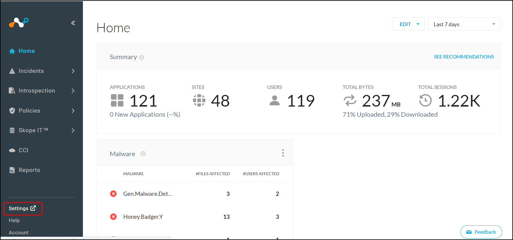
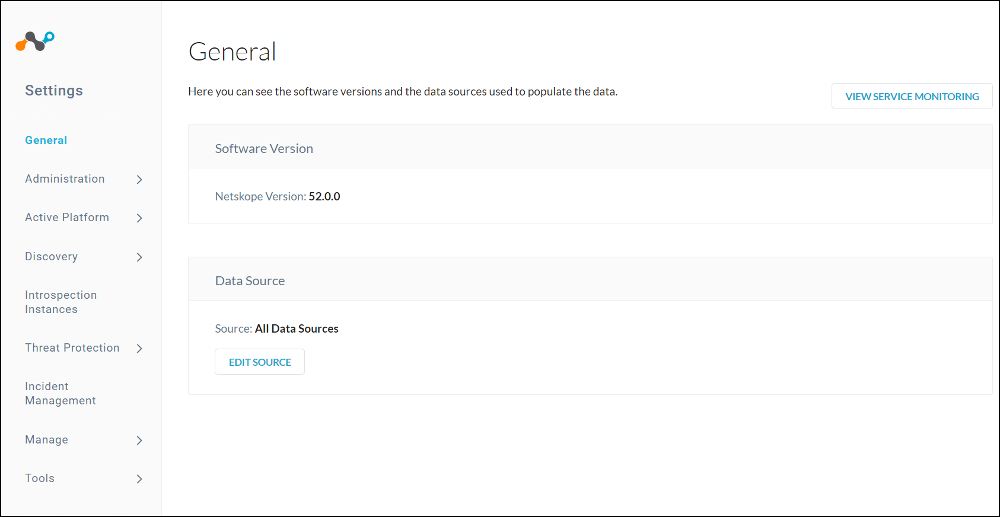
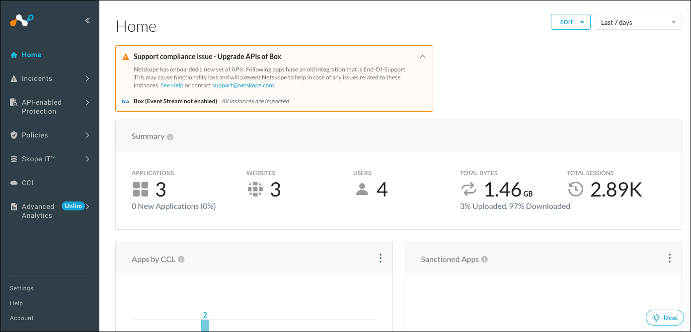

About the Admin Console
The admin console provides the central interface for configuring the settings of the Netskope Active Platform in addition to performing a variety of functions from creating reports to managing incidents. There are two primary areas of the admin console: Settings and Functions.
SETTINGS
Settings are accessible by clicking Settings in the bottom of the left nav on the Home page.
|  |
This opens the Settings page.
|  |
The Settings page left nav panel contains these links:
Administration
Add admins to the management console, define and assign roles, and configure SSO and IP whitelist setting for the management console itself.
Active Platform
Configure the optional on-premises infrastructure components of the Netskope Active Platform in addition to managing client traffic steering deployments, reverse proxy configurations, and exceptions.
Discovery
Upload logs to your Netskope tenant. You can uploads logs directly via the UI or via SFTP. There is also a custom log parser.
Introspection Instances
Configure API Introspection to connect to your IT-led, sanctioned cloud services
Threat Protection
Options for configuring your Introspection-configured cloud services for malware protection in addition to configuring integration with Carbon Black.
Incident Management
Enable forensics and setup a forensics profile.
Manage
Settings for traffic steering, custom apps, certificate-pinned apps, and device classification.
Tools
Create templates, configure directory tools, REST API, clear events, and get an uptime status.
FUNCTIONS
The Netskope Admin Console provides access to a number of functions. Functions are presented in the left nav panel.
|  |
Dashboard (Home)
Assess cloud risk by viewing information about applications, sites, users, total bytes, and total sessions. Customize this dashboard to display the information you want.
Incidents
The Incidents dashboard displays data loss prevention (DLP), anomalies, compromised credentials, malware, malicious sites, quarantine, and legal hold information.
Introspection
The Introspection Dashboard provides visibility into file exposure for your sanctioned cloud services that have been configured with API Introspection. Assess your risk and optionally take action directly from the dashboard.
Policies
Implement inline and API Introspection policies, encryption, DLP, and threat protection. Customize policies with profiles and templates.
Skope IT
Use Skope IT, Netskope's event-by-event monitoring tool, to view cloud usage events, manage alerts, interface with quarantine, legal hold, and threat threat protection dashboards, and manage incidents.
Cloud Confidence Index
Peruse the database of thousands of cloud services that have been researched and the enterprise-readiness assessed. Filter view by discovered apps or drill into the details of a specific cloud service.
Reports
The Reports dashboard displays summaries and allows you to create custom reports.